Representative Drainage Moulds
Expanded catalogue with 36 selected product examples. More sizes and styles can be quoted from drawings or sample photos.
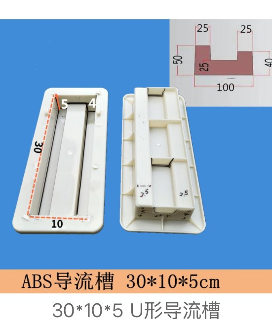
Diversion Channel Mould Design 01
Diversion Channel Mould · design 01
Diversion Channel Mould Design 02
Diversion Channel Mould · design 02

Diversion Channel Mould Design 03
Diversion Channel Mould · design 03
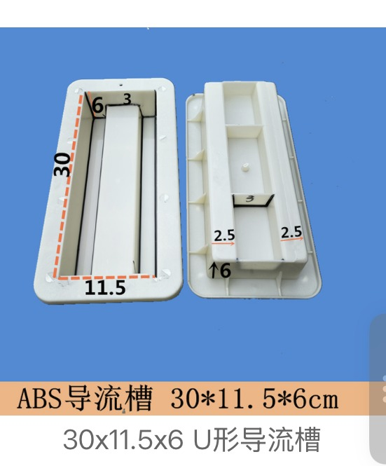
Diversion Channel Mould Design 04
Diversion Channel Mould · design 04

Diversion Channel Mould Design 05
Diversion Channel Mould · design 05

Diversion Channel Mould Design 06
Diversion Channel Mould · design 06
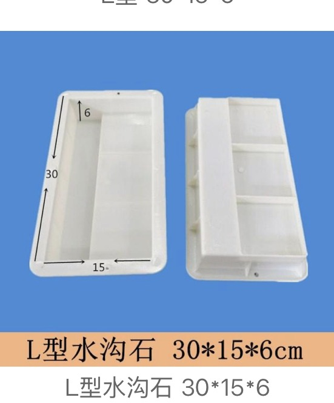
Diversion Channel Mould Design 07
Diversion Channel Mould · design 07

Diversion Channel Mould Design 08
Diversion Channel Mould · design 08

Diversion Channel Mould Design 09
Diversion Channel Mould · design 09
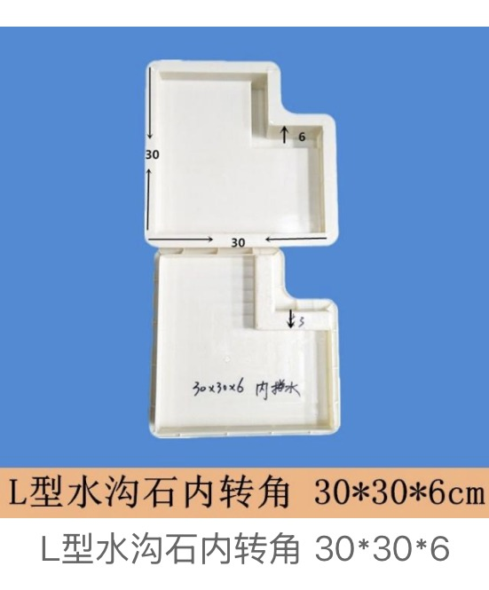
Diversion Channel Mould Design 10
Diversion Channel Mould · design 10
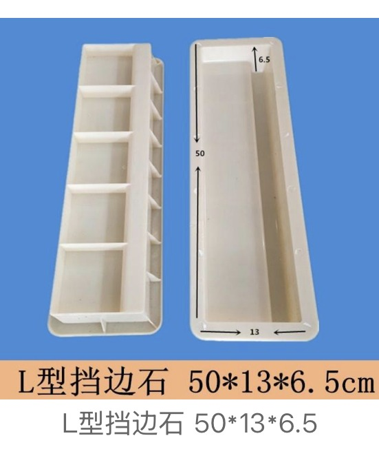
Diversion Channel Mould Design 11
Diversion Channel Mould · design 11

Diversion Channel Mould Design 12
Diversion Channel Mould · design 12

Diversion Channel Mould Design 13
Diversion Channel Mould · design 13

Diversion Channel Mould Design 14
Diversion Channel Mould · design 14
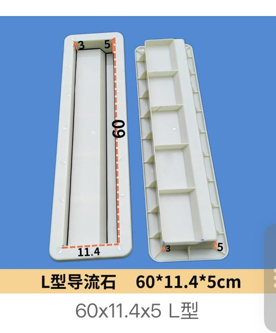
Diversion Channel Mould Design 15
Diversion Channel Mould · design 15
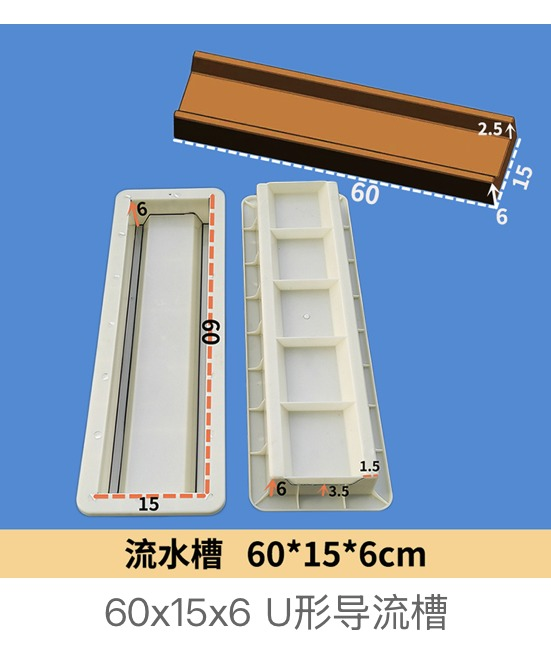
Diversion Channel Mould Design 16
Diversion Channel Mould · design 16
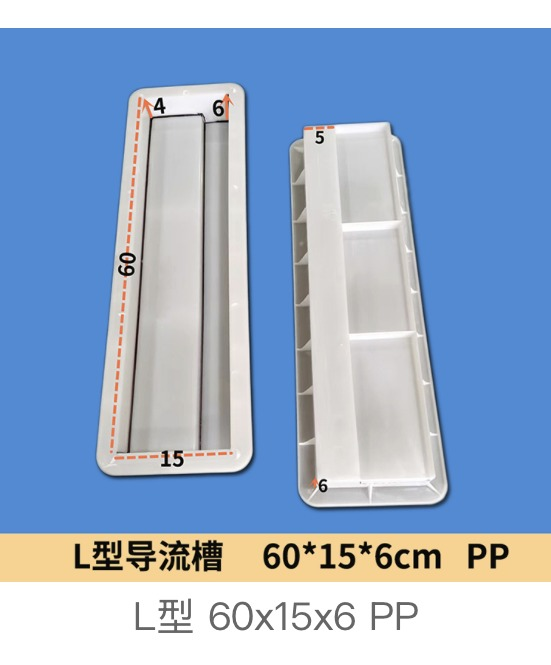
Diversion Channel Mould Design 17
Diversion Channel Mould · design 17
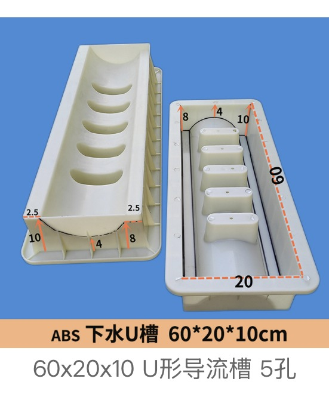
Diversion Channel Mould Design 18
Diversion Channel Mould · design 18

Diversion Channel Mould Design 19
Diversion Channel Mould · design 19

Diversion Channel Mould Design 20
Diversion Channel Mould · design 20

Diversion Channel Mould Design 21
Diversion Channel Mould · design 21

Diversion Channel Mould Design 22
Diversion Channel Mould · design 22
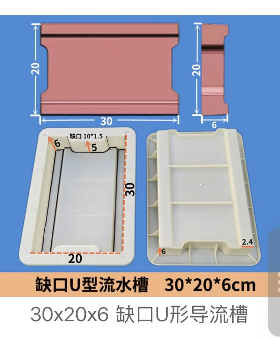
Diversion Channel Mould Design 23
Diversion Channel Mould · design 23
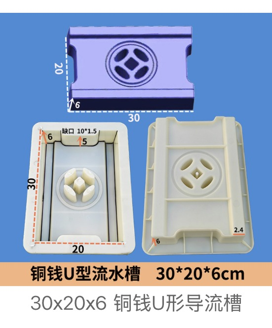
Diversion Channel Mould Design 24
Diversion Channel Mould · design 24
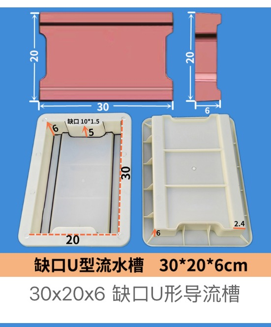
Diversion Channel Mould Design 25
Diversion Channel Mould · design 25

Diversion Channel Mould Design 26
Diversion Channel Mould · design 26

Diversion Channel Mould Design 27
Diversion Channel Mould · design 27

Diversion Channel Mould Design 28
Diversion Channel Mould · design 28
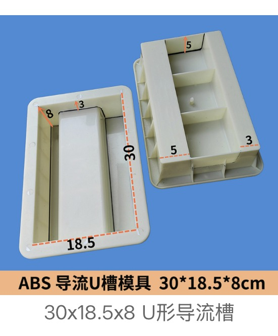
Diversion Channel Mould Design 29
Diversion Channel Mould · design 29

Diversion Channel Mould Design 30
Diversion Channel Mould · design 30